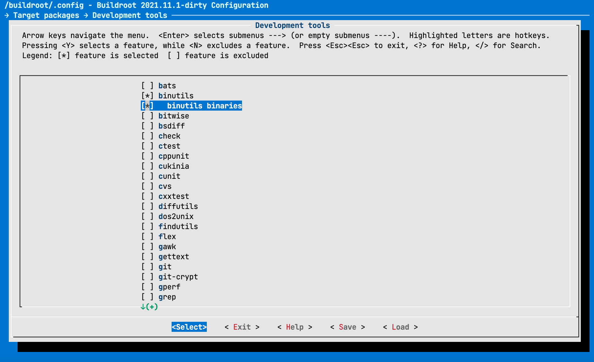
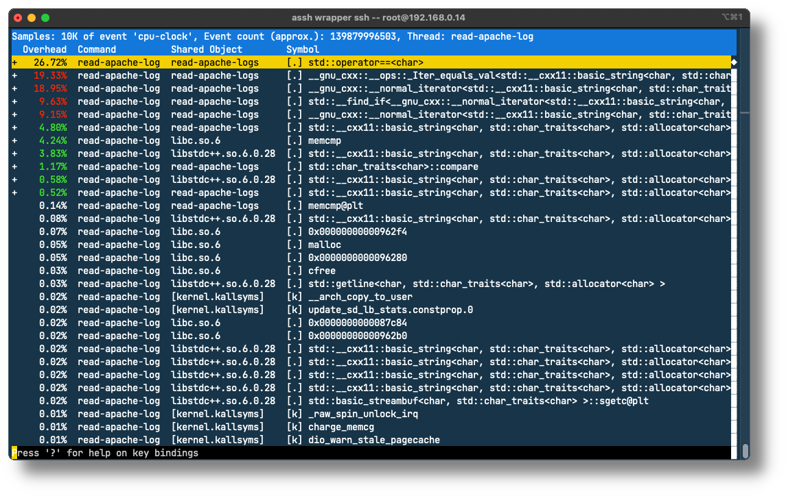

Outils d’analyse de performance pour Linux / Travaux pratiques
Prise en main de perf
Le but de cet exercice est de se familiariser avec l’outil perf et
d’en utiliser quelques fonctionnalités de base. Perf est un ensemble
d’outils très complet, mais complexe. Chaque outil est une sous-commande
de perf que l’on invoque de la manière suivante :
perf <sub-command>
La liste des commandes disponibles avec une description peut être obtenue en invoquant perf sans
argument :
# perf
usage: perf [--version] [--help] [OPTIONS] COMMAND [ARGS]
The most commonly used perf commands are:
annotate Read perf.data (created by perf record) and display annotated code
archive Create archive with object files with build-ids found in perf.data file
bench General framework for benchmark suites
buildid-cache Manage build-id cache.
buildid-list List the buildids in a perf.data file
c2c Shared Data C2C/HITM Analyzer.
config Get and set variables in a configuration file.
daemon Run record sessions on background
data Data file related processing
diff Read perf.data files and display the differential profile
evlist List the event names in a perf.data file
ftrace simple wrapper for kernel's ftrace functionality
inject Filter to augment the events stream with additional information
iostat Show I/O performance metrics
kallsyms Searches running kernel for symbols
kmem Tool to trace/measure kernel memory properties
kvm Tool to trace/measure kvm guest os
list List all symbolic event types
lock Analyze lock events
mem Profile memory accesses
record Run a command and record its profile into perf.data
report Read perf.data (created by perf record) and display the profile
sched Tool to trace/measure scheduler properties (latencies)
script Read perf.data (created by perf record) and display trace output
stat Run a command and gather performance counter statistics
test Runs sanity tests.
timechart Tool to visualize total system behavior during a workload
top System profiling tool.
version display the version of perf binary
probe Define new dynamic tracepoints
trace strace inspired tool
See 'perf help COMMAND' for more information on a specific command.
Installation de perf
La version de perf que vous avez générée avec Buildroot n’est pas totalement satisfaisante.
Commencez par reconfigurer Buildroot pour inclure les binutils :

Reconstruisez votre système avec la commande make comme vous l’avez fait
au début du semestre.
Mettez ensuite votre rootfs à jour en prenant soin de ne pas effacer
vos configurations (principalement /etc/fstab). Vous pouvez utiliser
le script ci-dessous :
#!/usr/bin/env bash
mkdir /rootfs_new/
tar xf /buildroot/output/images/rootfs.tar -C /rootfs_new/
rsync -acO --progress --exclude=/etc/fstab /rootfs_new/ /rootfs
rm -Rf /rootfs_new/
Générez ensuite une nouvelle version de perf avec les commandes suivantes :
$ cd /buildroot/output/build/linux-5.15.21/tools/perf/
$ make clean
$ make ARCH=arm64 CROSS_COMPILE=/buildroot/output/host/bin/aarch64-linux-
et remplacez l’ancien binaire de perf par le nouveau (si vous le souhaitez,
vous pouvez faire une copie de la version originale) :
$ cp perf /rootfs/usr/bin/perf
Validation de l’installation
Vérifier que perf fonctionne et que les compteurs matériels sont bien reconnus avec la commande :
# perf list
Si tout fonctionne correctement, une liste de compteurs avec la mention [Hardware event], par
exemple les compteurs cpu-cycles, instructions, etc.
List of pre-defined events (to be used in -e):
branch-instructions OR branches [Hardware event]
branch-misses [Hardware event]
bus-cycles [Hardware event]
cache-misses [Hardware event]
cache-references [Hardware event]
cpu-cycles OR cycles [Hardware event]
instructions [Hardware event]
La liste retournée dépend de la machine et du processeur utilisé. En effet, tous les processeurs ne
fournissent pas tous les mêmes compteurs. Les évènements les plus communs au début, identifié par
[Hardware event], tel que : cpu-cycles, instructions, cache-misses, branch-misses, etc. Les évènements
suivants, identifiés par [Software event] ne sont pas des évènements venant du processeur, mais des
tracepoints du noyau Linux que perf est également capable d’utiliser.
alignment-faults [Software event]
bpf-output [Software event]
cgroup-switches [Software event]
context-switches OR cs [Software event]
cpu-clock [Software event]
cpu-migrations OR migrations [Software event]
dummy [Software event]
emulation-faults [Software event]
major-faults [Software event]
minor-faults [Software event]
page-faults OR faults [Software event]
task-clock [Software event]
Comilation d’un exemple et utilisation de perf
La deuxième commande intéressante est perf stat. Elle permet d’obtenir différentes valeurs de
compteurs lors de l’exécution d’un programme. Elle mesure également le temps d’exécution du
programme.
Compilez (en utilisant le Makefile fourni) et exécutez le programme situé dans le dossier
src/06_optimization/ex01 en
utilisant la commande perf stat
# perf stat ./ex1
Sans options spécifiques, la commande mesure par défaut un certain nombre de compteurs. Relevez par exemple les compteurs du nombre de context-switches et d’instructions ainsi que le temps d’exécution.
Etude du code source
Ouvrez maintenant le fichier main.c et analysez le code.
Ce programme contient une erreur triviale qui empêche une utilisation optimale du cache. De quelle erreur s’agit-il ?
Si vous ne voyez pas l’erreur, essayez encore une fois, mais avec la commande
# perf stat -e cache-misses ./ex1
Correction de bug
Corrigez “l’erreur”, recompilez et mesurez à nouveau le temps d’exécution (soit avec perf stat, soit avec la commande time). Quelle amélioration constatez-vous ?
Validation
Grâce à perf, nous pouvons mesurer l’effet de notre modification, en utilisant le compteur
L1-dcache-load-misses. Celui-ci peut s’activer en passant le paramètre -e L1-dcache-load-misses
à la commande perf stat.
Relevez les valeurs du compteur L1-dcache-load-misses pour les deux versions de l’application. Quel facteur constatez-vous entre les deux valeurs ?
# perf stat -e L1-dcache-load-misses ./ex1
Analyse des évènements “capturables”
Décrivez brièvement ce que sont les évènements suivants :
- instructions
- cache-misses
- branch-misses
- L1-dcache-load-misses
- cpu-migrations
- context-switches
Mesure de l’impact sur la performance
Lors de la présentation de l’outil perf, on a vu que celui-ci permettait de profiler une application avec
très peu d’impacts sur les performances. En utilisant la commande time, mesurez le temps d’exécution
de notre application ex1 avec et sans la commande perf stat.
Analyse et optimisation d’un programme
Sur la base du programme situé dans le dossier src/06_optimization/ex02
Analyse du code source
Décrivez en quelques mots ce que fait ce programme.
Mesure du temps d’exécution
Compilez le programme à l’aide du Makefile joint.
Mesurez le temps d’exécution
Optimisation
Nous allons apporter une toute petite modification au code, qui ne change pas la sémantique et ne devrait à priori avoir aucun effet sur le temps d’exécution : trier le tableau d’éléments.
Avant la fonction int main(), ajoutez la méthode suivante :
static int compare (const void* a, const void* b)
{
return *(short*)a - *(short*)b;
}
Avant long long sum = 0;, ajoutez le code suivant :
qsort(data, SIZE, sizeof(data[0]), compare);
Compilez et mesurez le temps d’exécution de la version modifiée.
Mesures
Vous observez sans doute une nette amélioration sur le temps d’exécution.
À l’aide de l’outil perf et de sa sous-commande stat, en utilisant différents compteurs déterminez
pourquoi le programme modifié s’exécute plus rapidement.
Parsing de logs apache
Vous trouverez dans le dossier
src/06_optimization/ex03
une application C++ qui parcourt un fichier de access logs
Apache pour en compter les IPs _/ _Hostnames uniques qui s’y trouvent.
Deux fichiers de logs sont donnés en exemple :
- access_log_NASA_Jul95 contient les logs du mois de juillet 1995 d’un serveur de la NASA (~2mios d’entrées)
- access_log_NASA_Jul95_samples contient les 200‘000 premières entrées du fichier précédent.
Les fichiers de logs NASA ont été trouvés à cette addresse : ftp://ita.ee.lbl.gov/traces/ Une fois décompressés, ils sont assez volumineux; pensez à les exclure de votre dépôt git!
L’application peut être optimisée de façon considérable avec de toutes petites modifications. Nous
allons à nouveau utiliser les outils de perf pour analyser cette application afin d’identifier où le
programme passe le plus de temps. Pour ceci nous allons utiliser la sous-commande perf record et
son option d’enregistrement du call graph.
Conseil : pour exécuter l’application non optimisée, utilisez le fichier access_log_NASA_Jul95_samples.
Compilation et instrumentalisation du programme
Compilez l’application et profilez l’application avec perf record :
# perf record --call-graph dwarf -e cpu-clock -F 75 ./read-apache-logs access_log_NASA_Jul95_samples
L’exécution de cette commande doit produire un fichier de résultat perf, nommé perf.data. Si l’on
exécute une nouvelle fois la commande, ce fichier sera copié vers perf.data.old et un nouveau
perf.data correspondant à la dernière exécution sera créé.
Analyse des résultats
Nous pouvons maintenant analyser les données collectées par perf avec la commande perf report.
# perf report --no-children --demangle
L’interface se présente sous la forme suivante :

Recherche de la cause de la lenteur
Sur la capture ci-dessus, on voit par exemple que la majorité des cycles de l’application sont passés
dans la fonction std::operator==<char> qui est contenue dans la librairie standard. Il nous manque
cependant une information capitale : quelle fonction de notre application fait appel à cette fonction ?
Avec les instructions précédentes, déterminez quelle fonction de notre application fait (indirectement)
appel à std::operator==<char>.
Optimisation algorithmique
Maintenant que vous savez quelle fonction utilise le plus de ressources CPU, trouvez une optimisation du code permettant de réduire drastiquement le temps d’exécution (vous devriez arriver à quelques dixièmes de secondes pour le fichier sample).
Indice : rappelez-vous vos cours d’algorithmique…
Implémentation de l’optimisation
Une partie de la solution… Il faut remplacer le std::vector par une structure de données de la librairie
standard plus efficace pour faire des finds. Par exemple un std::set. Ceci implique quelques petites
modifications :
Fichier : HostCounter.h
- Remplacer la ligne
par
#include <vector>#include <set> - Remplacer la ligne
par
std::vector< std::string > myHosts;std::set< std::string > myHosts;
Fichier : HostCounter.cpp
-
Remplacer la ligne
parreturn std::find(myHosts.begin(), myHosts.end(), hostname) == myHosts.end();return myHosts.find(hostname) == myHosts.end(); -
Remplacer la ligne
parmyHosts.push_back(hostname);myHosts.insert(hostname);
Mesure de la latence et de la gigue (jitter)
Décrivez comment devrait-on procéder pour mesurer la latence et la gigue d’interruption, ceci aussi bien au niveau du noyau (kernel space) que de l’application (user space).
Archives 2021/2022